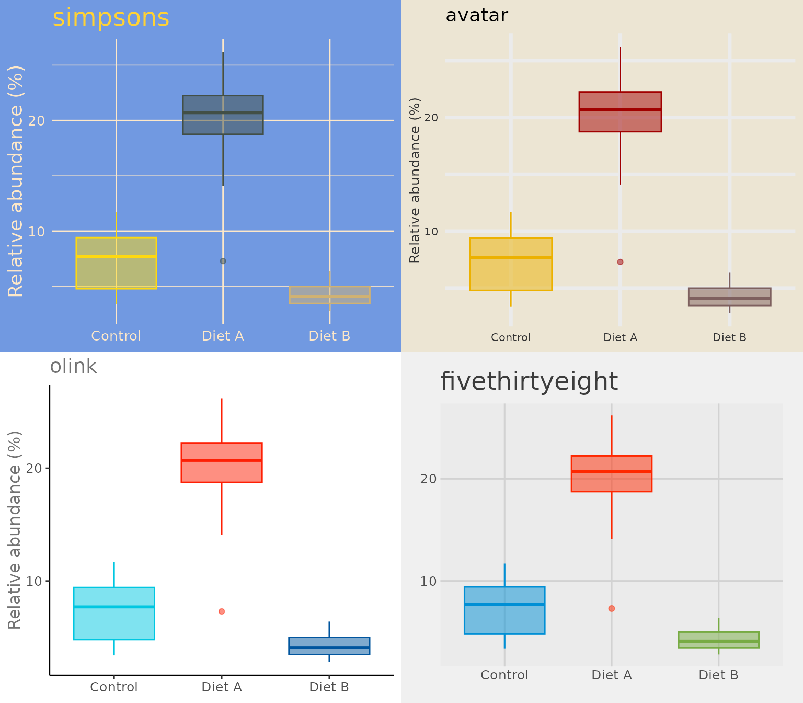
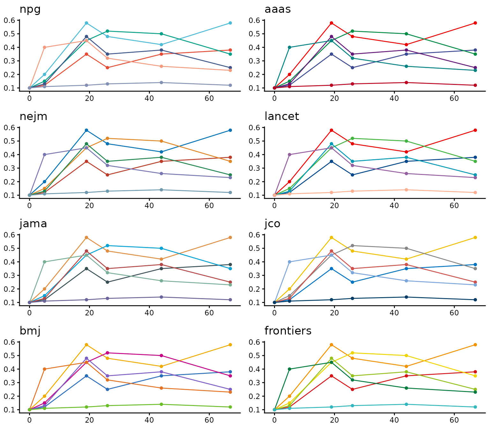
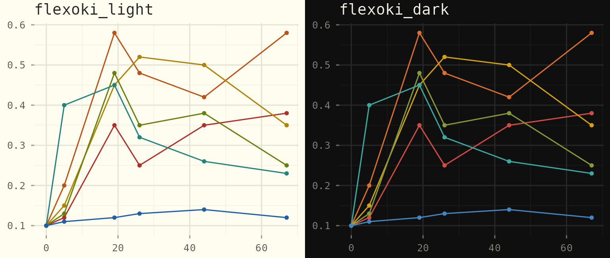
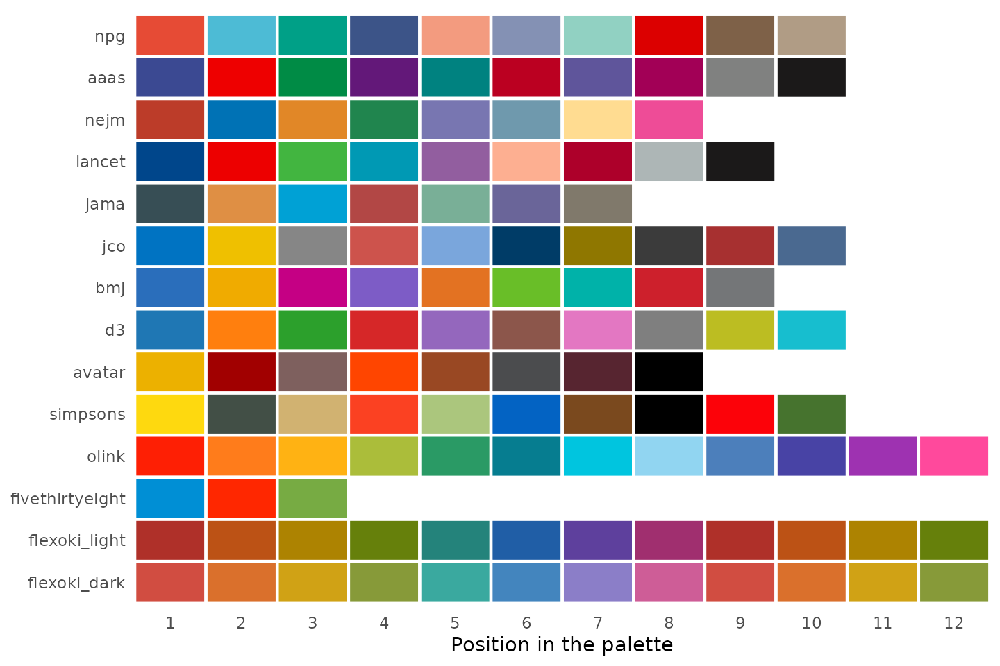
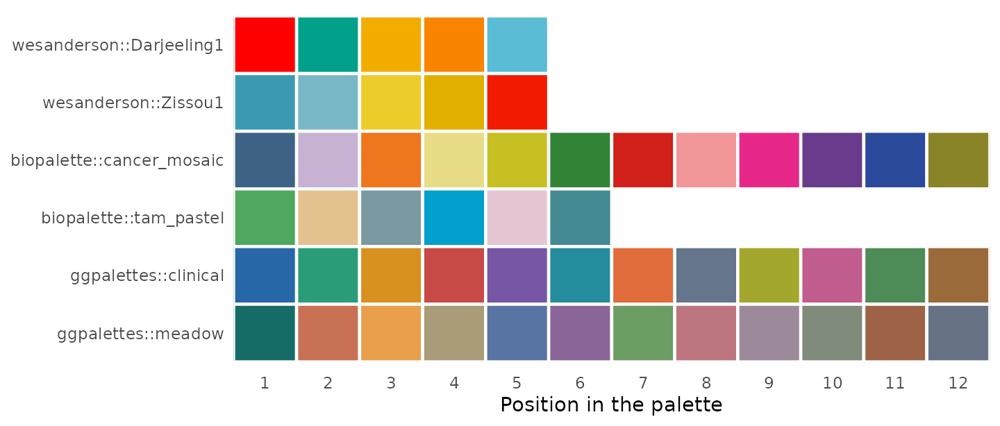
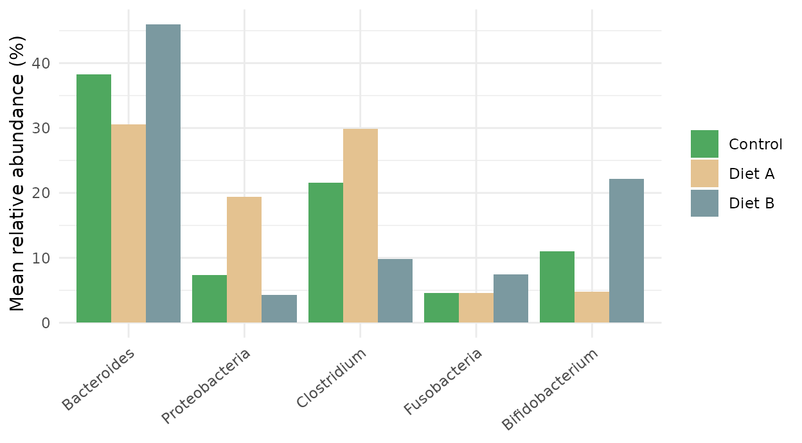
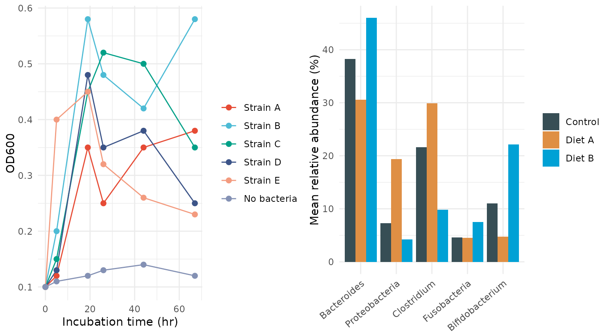
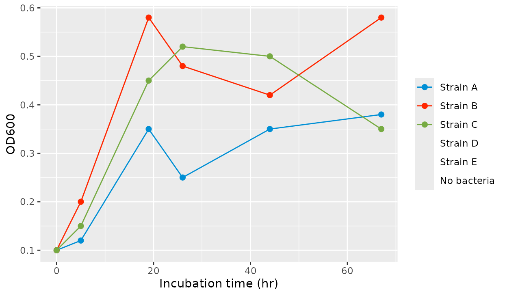
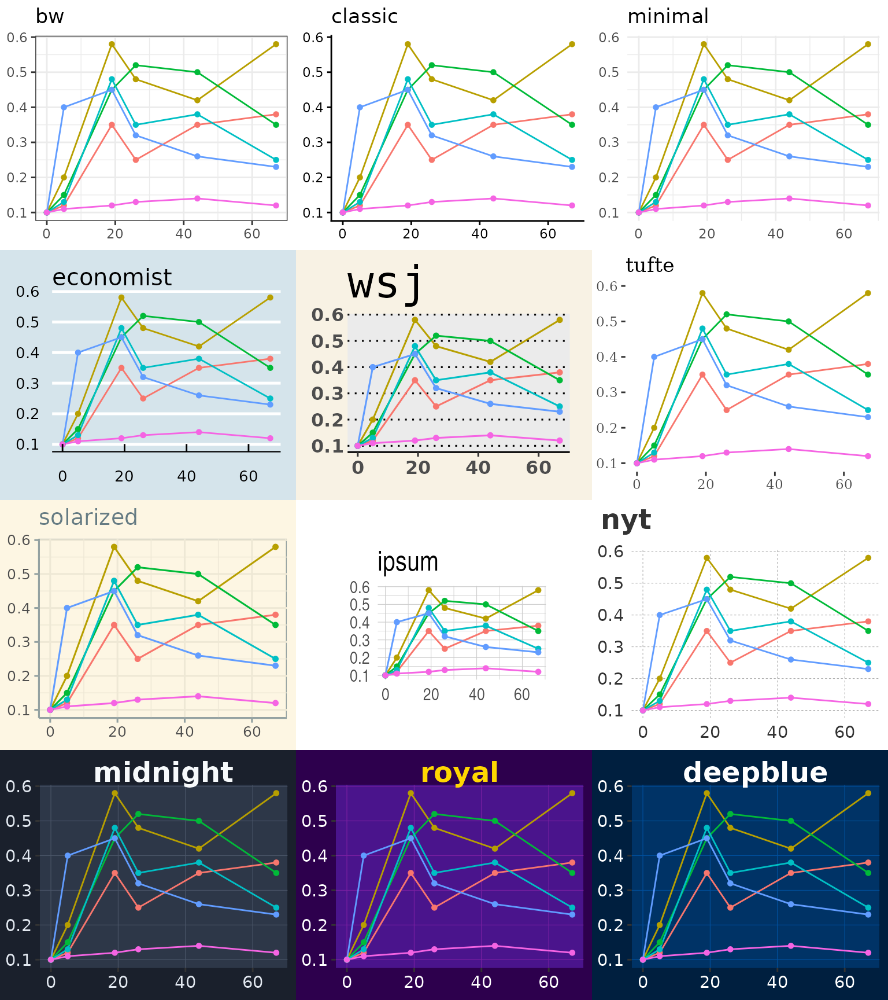
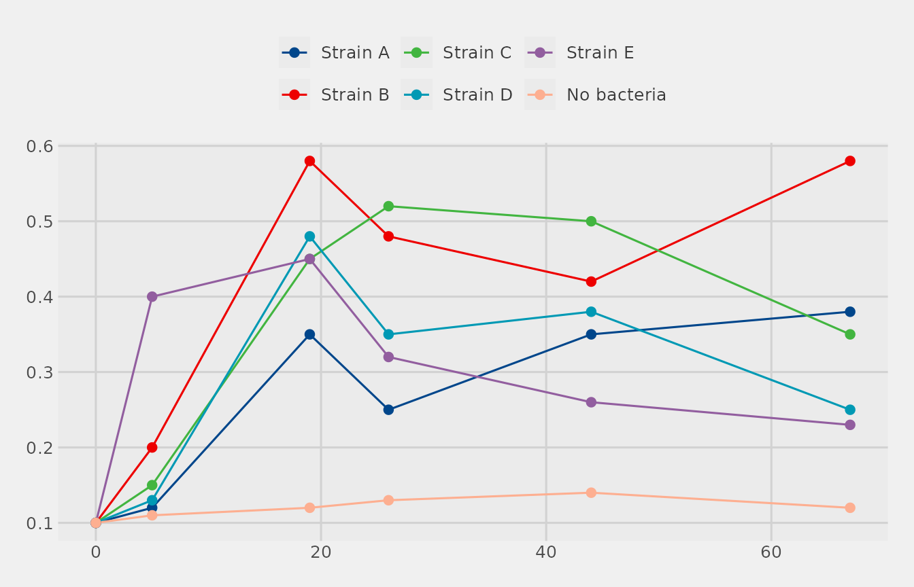

library(ggplot2)
library(themeset)
growth <- subset(example_growth(), measure == "OD600")
taxa <- example_taxa()Overview
apply_theme_set() adds up to three things to a plot: a
theme, a discrete color scale and a discrete fill scale. This article
looks at each of them, using the simulated data of
example_growth() and example_taxa():
- the 14 complete sets, which bring their own scales,
- the color and fill scales, which you can also use on their own and pick by name,
- the 35 theme-only sets, and where each one comes from,
- how to adjust a set after applying it,
- the sources and credits of everything that
themesetreaches.
1. The Complete Sets
TV and House Sets
simpsons, avatar, olink and
fivethirtyeight are complete: applying one changes the
theme and also sets the colors of the color and
fill aesthetics. Boxplots use both, the outline for
color and the box for fill, so a single plot
shows what a set does. The plot compares the three conditions for one
taxon:
proteo <- subset(taxa, taxon == "Proteobacteria")
base <- ggplot(proteo, aes(condition, abundance, color = condition, fill = condition)) +
geom_boxplot(alpha = 0.5, show.legend = FALSE) +
labs(x = NULL, y = "Relative abundance (%)")
complete <- c("simpsons", "avatar", "olink", "fivethirtyeight")
panels <- lapply(complete, function(s) apply_theme_set(base, s) + ggtitle(s))
cowplot::plot_grid(plotlist = panels, ncol = 2)
The scales behind these sets are exported as
scale_color_simpsons(), scale_color_avatar(),
scale_color_olink() and
scale_color_fivethirtyeight(), with matching
scale_fill_*() versions.
Journal Sets
The journal sets pair the classic theme, with its white
background, L-shaped axes and no grid, with a palette that is named
after a journal: npg, aaas, nejm,
lancet, jama, jco,
bmj and frontiers. The palettes come from the
ggsci package. They take their inspiration from the journals, and
themeset is not affiliated with any of them. Each panel
draws the six strains of the growth experiment:
strain_lines <- ggplot(growth, aes(time, value, color = strain)) +
geom_line() +
geom_point(size = 1.2) +
labs(x = NULL, y = NULL, color = NULL)
journal <- c("npg", "aaas", "nejm", "lancet", "jama", "jco", "bmj", "frontiers")
panels <- lapply(journal, function(s) {
apply_theme_set(strain_lines, s) + ggtitle(s) + theme(legend.position = "none")
})
cowplot::plot_grid(plotlist = panels, ncol = 2)
Flexoki
flexoki_light and flexoki_dark use the Flexoki color scheme by Steph
Ango, through the flexoki package: warm paper and ink colors that are
meant for reading. The light set takes the deep accent tones, which read
well on paper, and the dark set the paler ones, which read well on a
dark screen. The dark set also draws the default geoms in a light color
(see the dark sets below).
flexoki <- lapply(c("flexoki_light", "flexoki_dark"), function(s) {
apply_theme_set(strain_lines, s) + ggtitle(s) + theme(legend.position = "none")
})
cowplot::plot_grid(plotlist = flexoki, ncol = 2)
2. Color and Fill Scales
The scales of the sets are available on their own.
scale_color_set() and scale_fill_set() pick a
palette by name, and list_color_scales() prints the names,
grouped by the package that the palettes come from:
list_color_scales()
#> Available color scale sets:
#> tvthemes: avatar, simpsons
#> OlinkAnalyze: olink
#> ggthemes: fivethirtyeight
#> ggsci: aaas, atlassian, bmj, cosmic, d3, flatui, frontiers, futurama, gephi,
#> igv, iterm, jama, jco, lancet, locuszoom, nejm, npg, observable, primer,
#> rickandmorty, startrek, tron, uchicago, ucscgb
#> flexoki: flexoki_light, flexoki_dark
#> grDevices: okabe_ito
#> wesanderson (use as wesanderson::<name>): BottleRocket1, BottleRocket2,
#> Rushmore1, Rushmore, Royal1, Royal2, Zissou1, Darjeeling1, Darjeeling2,
#> Chevalier1, FantasticFox1, Moonrise1, Moonrise2, Moonrise3, Cavalcanti1,
#> GrandBudapest1, GrandBudapest2, IsleofDogs1, IsleofDogs2, FrenchDispatch,
#> AsteroidCity1, AsteroidCity2, AsteroidCity3
#> biopalette (use as biopalette::<name>): gene_red, heat_light, three_body,
#> lactate_steps, walter_white2, tam_pastel, bcell_atlas, cancer_mosaic,
#> bcell_clusters, babel
#> ggpalettes (use as ggpalettes::<name>): meadow, atelier, clinical, spectrum,
#> pastel, earth, midnight, floral, coastal, harvest| Package | Names | Colors |
|---|---|---|
| ggsci | 24 palettes, among them npg, aaas,
nejm, lancet, jama,
jco, bmj, d3, igv,
futurama and startrek
|
6 to 79, most of them 7 to 12 |
| tvthemes |
avatar, simpsons
|
8 and 10 |
| OlinkAnalyze | olink |
no fixed limit |
| ggthemes | fivethirtyeight |
3 |
| flexoki |
flexoki_light, flexoki_dark
|
8, then they repeat |
| wesanderson, biopalette, ggpalettes | package::palette |
see below |
The oldest scales also have a function of their own:
scale_color_npg() and scale_color_set("npg")
are the same scale. olink interpolates between its base
colors, so it can serve any number of levels, while the two flexoki sets
repeat their eight colors. The figure shows the first 12 colors of
fourteen of the sets, in the order ggplot2 hands them to the levels of a
factor:
# The largest number of colors, up to n, that a set can give
palette_colors <- function(set, n = 12) {
scale <- scale_color_set(set)
for (k in n:1) {
colors <- tryCatch(suppressWarnings(scale$palette(k)), error = function(e) NULL)
if (!is.null(colors) && !anyNA(colors)) return(colors)
}
}
swatch_plot <- function(sets) {
swatches <- do.call(rbind, lapply(sets, function(set) {
colors <- palette_colors(set)
data.frame(set = set, position = seq_along(colors), color = colors)
}))
swatches$set <- factor(swatches$set, levels = rev(sets))
ggplot(swatches, aes(position, set, fill = color)) +
geom_tile(color = "white", linewidth = 0.8) +
scale_fill_identity() +
scale_x_continuous(breaks = 1:12, expand = c(0, 0)) +
labs(x = "Position in the palette", y = NULL) +
theme_minimal() +
theme(panel.grid = element_blank())
}
swatch_plot(c("npg", "aaas", "nejm", "lancet", "jama", "jco", "bmj", "d3", "avatar",
"simpsons", "olink", "fivethirtyeight", "flexoki_light", "flexoki_dark"))
Optional Palettes
Three more packages are suggested, not required: wesanderson,
biopalette and ggpalettes. When one of them is installed, its palettes
appear in list_color_scales() as
package::palette and work like any other name. The
qualitative palettes of biopalette are meant for biomedical figures, and
the categorical palettes of ggpalettes interpolate, so they serve many
levels:
swatch_plot(c("wesanderson::Darjeeling1", "wesanderson::Zissou1",
"biopalette::cancer_mosaic", "biopalette::tam_pastel",
"ggpalettes::clinical", "ggpalettes::meadow"))
ggplot(taxa, aes(taxon, abundance, fill = condition)) +
stat_summary(fun = mean, geom = "col", position = position_dodge()) +
labs(x = NULL, y = "Mean relative abundance (%)", fill = NULL) +
guides(x = guide_axis(angle = 40)) +
theme_minimal() +
scale_fill_set("biopalette::tam_pastel")
A palette of a package that is not installed is an error that says which package to install.
Using a Scale With Any Theme
The scales are plain ggplot2 scales, so they work with any theme:
lines <- ggplot(growth, aes(time, value, color = strain)) +
geom_line() +
geom_point(size = 2) +
labs(x = "Incubation time (hr)", y = "OD600", color = NULL) +
theme_minimal() +
scale_color_npg()
bars <- ggplot(taxa, aes(taxon, abundance, fill = condition)) +
stat_summary(fun = mean, geom = "col", position = position_dodge()) +
labs(x = NULL, y = "Mean relative abundance (%)", fill = NULL) +
guides(x = guide_axis(angle = 40)) +
theme_minimal() +
scale_fill_jama()
cowplot::plot_grid(lines, bars, ncol = 2)
Palette Size
A palette with a fixed number of colors cannot color more levels than
it has. fivethirtyeight has three, so the six strains of
the growth experiment leave three of them without a color. ggplot2
warns, and the lines and points of those strains are dropped:
ggplot(growth, aes(time, value, color = strain)) +
geom_line() +
geom_point(size = 2) +
labs(x = "Incubation time (hr)", y = "OD600", color = NULL) +
scale_color_fivethirtyeight()
#> Warning: This manual palette can handle a maximum of 3 values. You have
#> supplied 6
#> Warning: Removed 18 rows containing missing values or values outside the scale range
#> (`geom_line()`).
#> Warning: Removed 18 rows containing missing values or values outside the scale range
#> (`geom_point()`).
For data with many groups choose a larger palette such as
npg, simpsons or olink. The
palettes of wesanderson are fixed vectors of colors, so with too many
levels they stop with an error instead.
3. Theme-Only Sets
The other 35 sets change the theme and leave the scales alone. Most
of them come from other packages; themeset wraps each one
so that apply_theme_set() can reach it by name.
| Source | Sets |
|---|---|
| ggplot2 |
bw, classic, dark,
light, linedraw, minimal
|
| ggthemes |
base, calc, clean,
economist, economist_white,
excel, excel_new, few,
foundation, gdocs, hc,
igray, map_gg, pander,
par, solarized, solarized_2,
solid, stata, tufte,
wsj
|
| hrbrthemes |
ipsum, ipsum_rc
|
| cowplot |
cowplot, minimal_grid
|
| themeset |
nyt, midnight, royal,
deepblue
|
(fivethirtyeight is also a ggthemes theme; it is one of
the complete sets above because it ships with its colors, and
classic is the theme of the journal sets.)
A selection of twelve, on the same growth curves:
gallery_sets <- c("bw", "classic", "minimal", "economist", "wsj", "tufte",
"solarized", "ipsum", "nyt", "midnight", "royal", "deepblue")
gallery_base <- ggplot(growth, aes(time, value, color = strain)) +
geom_line() +
geom_point(size = 1.2) +
labs(x = NULL, y = NULL, color = NULL)
tiles <- lapply(gallery_sets, function(s) {
apply_theme_set(gallery_base, s) + ggtitle(s) + theme(legend.position = "none")
})
cowplot::plot_grid(plotlist = tiles, ncol = 3)
A few practical notes:
-
ipsumandipsum_rcask for the fonts “Arial Narrow” and “Roboto Condensed”. If a font is not installed R falls back to its default family and the plot still draws. - 44 of the 49 sets render markdown in their titles, legend titles and
facet labels. The exceptions are
nyt,midnight,royal,deepblueandsolid. See Markdown-Enabled Themes. - The dark sets,
midnight,royal,deepblueandflexoki_dark, also set the default color of points, lines and text to a light one, so that a layer without a color mapping, such asgeom_point(), shows on the dark panel. This needs ggplot2 4.0 or later; with an older version the dark sets draw those layers black.
4. Adjusting a Set
apply_theme_set() returns a normal ggplot object, and
anything you add afterwards takes precedence. Adding a second scale for
the same aesthetic replaces the one from the set (ggplot2 prints a
message about it), and theme() changes single elements of
the set’s theme:
p <- ggplot(growth, aes(time, value, color = strain)) +
geom_line() +
geom_point(size = 2) +
labs(x = "Incubation time (hr)", y = "OD600", color = NULL)
apply_theme_set(p, "fivethirtyeight") +
scale_color_set("lancet") +
theme(legend.position = "top")
This keeps the look of the fivethirtyeight set but swaps
its three-color palette, too small for six strains, for
lancet, which has nine colors.
5. Sources and Credits
themeset does not contain the themes and palettes that
it offers: it calls the packages below by name, and the work is theirs.
Please credit them when you use their sets.
| Package | What themeset reaches in it |
Authors |
|---|---|---|
| ggplot2 | the themes bw, classic, dark,
light, linedraw, minimal
|
the ggplot2 authors |
| ggsci | the palettes of the journal sets, and 16 more | Nan Xiao and contributors |
| ggthemes | most theme-only sets, and fivethirtyeight
|
Jeffrey B. Arnold and contributors |
| hrbrthemes |
ipsum, ipsum_rc
|
Bob Rudis and contributors |
| tvthemes |
simpsons, avatar
|
Ryo Nakagawara |
| cowplot |
cowplot, minimal_grid
|
Claus O. Wilke |
| OlinkAnalyze | olink |
Olink and the authors of OlinkAnalyze |
| flexoki |
flexoki_light, flexoki_dark
|
Christopher T. Kenny; the Flexoki color scheme is by Steph Ango |
| grDevices (base R) | the okabe_ito palette |
R Core Team; the palette is by Masataka Okabe and Kei Ito |
| ggtext | markdown in titles, axis titles, legend titles and facet strips | Claus O. Wilke and Brenton M. Wiernik |
| wesanderson (optional) |
wesanderson:: palettes |
Karthik Ram and Hadley Wickham |
| biopalette (optional) |
biopalette:: palettes |
Yibin Zhou |
| ggpalettes (optional) |
ggpalettes:: palettes |
Yaoxiang Li |
Two ideas come from packages that themeset does not use.
The names of the form package::palette follow paletteer by
Emil Hvitfeldt, which reaches many palette collections that way. The
ggdark package by Neal Grantham showed that a dark theme has to change
the default color of the geoms too; themeset does that with
the theme element that ggplot2 4.0 provides for it, and shares no code
with ggdark.
Summary
| To get | Use |
|---|---|
| A theme with matching colors |
apply_theme_set(p, "<complete set>"), for example
"simpsons", "nejm" or
"flexoki_dark"
|
| Only a palette |
scale_color_set("<name>") and
scale_fill_set("<name>"), or
scale_color_*()
|
| The names of the palettes | list_color_scales() |
| Only a look |
apply_theme_set(p, "<theme-only set>"), or call
the theme directly |
| A set’s look with another palette | Add a scale_*() after
apply_theme_set()
|